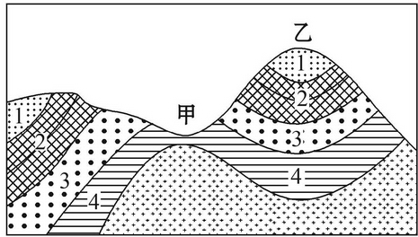
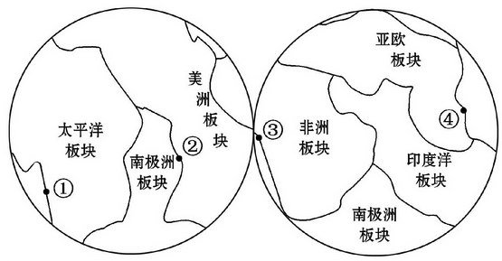
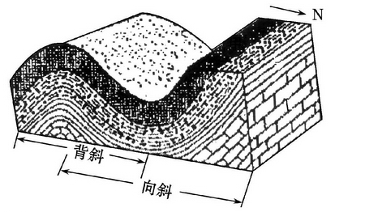
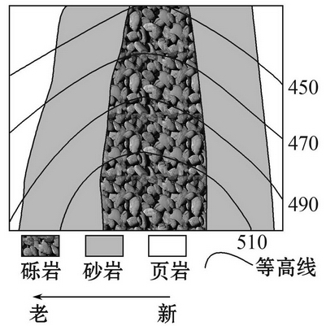
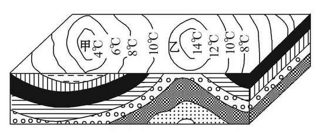
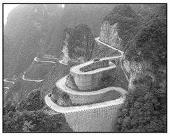

None - Fade - Slide - Convex - Concave - Zoom
选择班级
幻灯片样式
Black (default) -
White -
League -
Sky -
Beige -
Simple
Serif -
Blood -
Night -
Moon -
Solarized
读下图，回答1、2题。
1.下列说法正确的是( )
A.甲处向斜成谷
B.乙处背斜成岭
C.从1～4，岩层年龄渐新
D.甲处岩层中间老，两翼新
2.图中，甲地貌的成因是( )
A.岩层受到挤压，岩层向下弯曲所致
B.背斜顶部受侵蚀而成为谷地
C.向斜受到挤压，岩石断裂形成谷地
D.岩层不连续的沉积而成
2011年2月22日，新西兰发生6.3级地震，造成大量人员伤亡。结合全球板块构造局部图，完成3、4题。
3.此次地震的位置位于图中( )
A.①
B.②
C.③
D.④
4.有关其成因的说法正确的是( )
A.太平洋板块与印度洋板块碰撞形成
B.南极洲板块与印度洋板块碰撞形成
C.太平洋板块与美洲板块碰撞形成
D.南极洲板块与美洲板块碰撞形成
2010年11月15日，连接“环渤海”和“长三角”两大经济龙头地区的京沪高铁全线铺通，初步确定2011年国庆建成通车，并将于2012年春运期间投入运营。结合京沪高铁穿越的某地质构造剖面图，完成5、6题。
5.对于该图解释合理的是( )
A.图中山地的成因可能是火山喷发
B.该山地地下一定蕴藏着石油
C.通常向斜中心部分岩层较新
D.庐山的形成与图示地质构造有关系
6.若京沪高铁从上述地区穿过，工程人员必须考虑( )
A.高速铁路施工过程防止诱发地震
B.保护植被，避免引发山洪或泥石流
C.为降低成本，一定要修穿山隧道
D.修高架桥以降低冻土的不良影响
图中沉积岩的形成符合颗粒大的先沉积，颗粒小的后沉积的规律。图中线段为等高线，读图回答1、2题。
1.该地为( )
A.向斜成山
B.向斜成谷
C.背斜成谷
D.背斜成山
2.形成图示地形的主要地质作用是 ( )
A.地壳运动
B.岩浆活动
C.侵蚀作用
D.堆积作用
读等温线及地质剖面图(图中温度受地形影响)，完成3、4题。
3.乙处的地形及地质构造是( )
A.山地、背斜
B.山地、向斜
C.盆地、向斜
D.盆地、背斜
4.甲处地质构造( )
A.便于储水
B.便于储油
C.上部岩层较老
D.两侧岩层较新
下图所示区域有“一山有四季，十里不同天”之说，读图完成5、6题。
5.图中公路线的选择，主要是考虑了( )
A.气候因素
B.居民点分布
C.地形因素
D.工业分布
6.图中公路基本沿等高线延伸的主要原因是( )
A.客货运量大
B.水源充足
C.地势低，热量条件好
D.地势起伏小，工程造价低，难度小